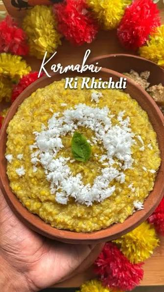

Sakala Dhupa — Morning Offering
Mahaprasad Khichdi
ଖେଚୁଡ଼ି ମହାପ୍ରସାଦ
"ଅଗ୍ନୋ ପ୍ରାସ୍ତାହୁତିଃ ସମ୍ୟଗ୍ ଆଦିତ୍ୟମୁପ ତିଷ୍ଠତି"
"What is offered into the fire with devotion, rises to reach the divine."
— Manu Smriti 3.76
Offered to Lord Jagannath, Lord Balaram and Maa Subhadra at 10 AM daily during the Sakala Dhupa, this khichdi is then re-offered to Goddess Bimala — only after which it becomes true Mahaprasad. Cooked only in earthen pots over firewood, without onion or garlic. No potato, no tomato — only ancient indigenous vegetables.
Ingredients
- 1 cup Gobindobhog or Ambemohar rice
- ½ cup moong dal (split green gram)
- 1 cup pumpkin, cut in chunks
- ½ cup raw banana, cut in rounds
- ½ cup drumstick pieces
- 1-inch ginger, grated
- 1 tsp turmeric powder
- 1 tsp cumin seeds
- ½ tsp asafoetida (hing)
- 2–3 dried red chillies
- 2 tbsp pure cow ghee
- Rock salt to taste
- 5 cups water
- Fresh coconut (grated), for garnish
Instructions
Rinse rice and moong dal together 2–3 times. Soak in water for 15 minutes. The soaking softens the grains and reduces cooking time in the clay pot.
Heat a clay pot or heavy-bottomed pan. Add 5 cups of water and bring to a rolling boil. Temple cooking always starts with boiling water.
Drain the soaked rice and dal. Add directly into the boiling water. Stir once. The water should be rolling — this keeps the grains separate.
After 10 minutes, add the pumpkin, raw banana, and drumstick pieces. Add grated ginger and turmeric. Stir gently and cover.
Cook on a medium-low flame for 15–20 minutes, stirring occasionally, until the dal is completely cooked and the khichdi reaches a soft porridge-like consistency.
In a separate small pan, heat ghee. Add cumin seeds and let them splutter. Add hing and dried red chillies. Fry for 30 seconds until fragrant.
Pour this tempering over the khichdi. Add rock salt. Stir well, cover, and let it rest for 5 minutes for the flavours to infuse.
Serve in a clay katori. Garnish with freshly grated coconut and a small spoon of ghee on top. Offer to the deity before serving.